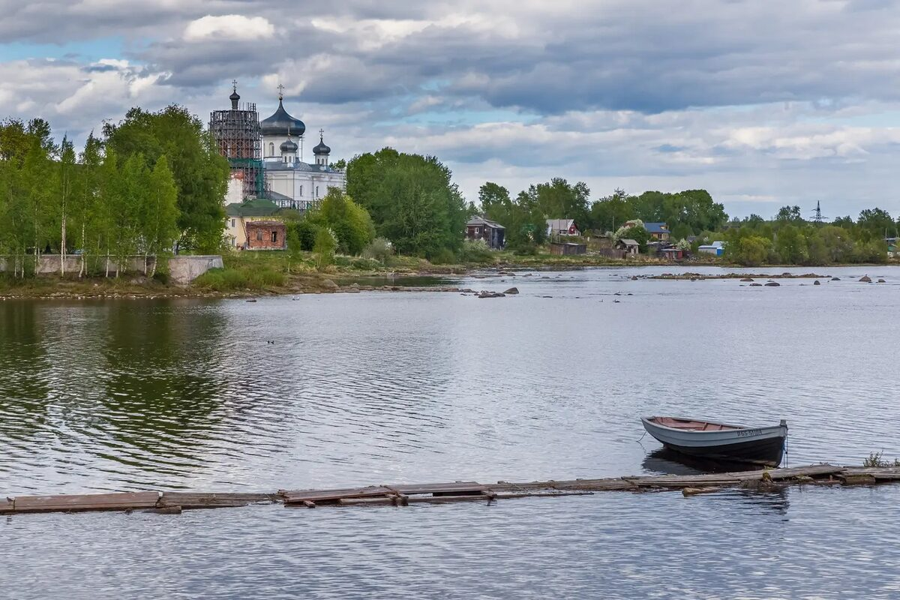

жителей по оценке на 1 января 2025 года; городская часть тогдашнего Кемского района. [2]
База знаний юного экскурсовода
Кемь и округ.
Знать, чтобы рассказать.
Понятная справка о городе у Белого моря: природа, история, жизнь людей, населённые пункты и источники для подготовки экскурсии.
Сведения сверены 1 ноября 2026 года. Статистические показатели приведены на дату, указанную рядом с каждым числом; страница не обновляет их автоматически.

Начнём с главного
Город и округ в цифрах
Кемь — город в Республике Карелия и административный центр Кемского муниципального округа. Город и округ — разные территории, поэтому численность их жителей нельзя смешивать. [1]
жителей на 1 января 2025 года в границах тогдашнего Кемского муниципального района. [2]
населённых пунктов перечислены в региональном законе. Это один город и 18 сельских населённых пунктов. [1]
год образования Кемского уезда и присвоения Кеми городского статуса. [4]
год преобразования района и его поселений в муниципальный округ. [1] [3]
Северо-восточная часть Карелии, устье реки Кемь и прилегающее побережье. [5]
Как правильно произнести цифры. «По оценке на 1 января 2025 года в Кеми было 9 388 жителей, а на территории тогдашнего Кемского района — 12 216». Это не перепись и не число жителей на сегодняшний день. Перед новой экскурсией уточните свежую оценку в Карелиястате.
Как менялся город
Население Кеми в разные годы
За статистикой стоят семьи, поколения и судьбы людей. Здесь приведены сведения именно о городе Кеми; исторический уезд и нынешний округ в эти числа не входят.
21 025 человек — перепись 1970 года. Это наибольшее значение среди результатов переписей, приведённых в таблице. Девять лет спустя перепись 1979 года зафиксировала 20 962 человека. Промежуточные ежегодные оценки и возможные изменения границ требуют отдельной сверки, поэтому абсолютный максимум за каждый год истории города здесь не утверждается. [25] [26]
| Год | Человек | Как получены данные |
|---|---|---|
| 1897 | 2 447 | Первая всеобщая перепись: наличное население. [23] |
| 1959 | 18 127 | Всесоюзная перепись. [24] |
| 1970 | 21 025 | Всесоюзная перепись; наибольшее значение в этой подборке. [25] |
| 1979 | 20 962 | Всесоюзная перепись. [26] |
| 1989 | 18 522 | Всесоюзная перепись: наличное население. [27] |
| 2002 | 14 620 | Всероссийская перепись. [28] |
| 2010 | 13 051 | Всероссийская перепись. [29] |
| 2021 | 10 018 | Итоги переписи 2020 года по состоянию на 1 октября 2021 года; число приведено по РУВИКИ со ссылкой на Росстат. [30] |
| 2025 | 9 388 | Оценка постоянного населения на 1 января, а не новая перепись. [2] |
Полоски показывают величину относительно 21 025 человек. Переписи учитывали население по правилам своего времени; границы и категории учёта могли меняться. Поэтому сравнение показывает общий масштаб изменений и не объясняет их причины само по себе.
Город и уезд — не одно и то же
Перепись 1897 года учла в Кеми 2 447 человек, а во всём Кемском уезде Архангельской губернии — 35 392, включая город. Исторический уезд занимал территорию, отличающуюся от нынешнего округа; напрямую сопоставлять эти территории нельзя. [23]
Рабочеостровск в переписях
В 1970 году в Рабочеостровске, тогда посёлке городского типа, перепись зафиксировала 3 618 человек; в 1979 году — 3 414, в 1989 году — 3 088. Это сведения об отдельном населённом пункте, а не о городе Кеми. [25] [26] [27]
Для живого рассказа
Интересные факты о Кеми
Эти детали помогут сделать экскурсию запоминающейся. У каждого факта есть ссылка, а старые описания отнесены к своему времени.
10 рублей · 2004 год
22 сентября 2004 года Банк России выпустил монету «Кемь» серии «Древние города России». Её тираж — пять миллионов экземпляров. На монете показаны панорама города, лодки и городской герб. [31]
191 километр
По правилам использования водных ресурсов, утверждённым Росводресурсами в 2025 году, Кемь вытекает из Нижнего Куйто и достигает Белого моря через 191 км. Площадь её бассейна — 27 700 км². Длину самой реки и длину речной системы с притоками нужно различать. [33]
326 домов
В энциклопедическом словаре Брокгауза и Ефрона Кемь описана как город с 326 домами, из которых один был каменным. Это сведения исторического издания конца XIX века; рядом в статье приведены данные о жителях на 1 января 1894 года. [32]
Жемчужный венок
На историческом гербе Кеми, утверждённом в 1788 году, изображён венок из жемчужин на голубом поле. Его связывали с речным жемчугом Севера. Современные символы города и округа нужно рассматривать отдельно от исторического герба. [35]
Замысел 1896 года
В каталоге Библиотеки Конгресса США есть 46-страничная брошюра С. М. Вислоцкого о северном железнодорожном пути Петербург — Кемь — Мурман. Издание вышло задолго до строительства Мурманской железной дороги; сам текст ещё предстоит изучить. [34]
Кемь в 1919 году
В каталоге британского Royal Museums Greenwich описаны фотографии кемской набережной и церквей, датированные 26 августа 1919 года. Это данные музейной записи: сами изображения и точные места съёмки ещё нужно сверить. [22]
Где мы находимся
Река, острова и море
Кемь выросла у одноимённой реки в районе её впадения в Белое море. Старая часть города связана с островами и рукавами реки; поэтому для понимания городской истории важны мосты, берега и острова. [6]
Карельское Поморье
Это беломорское побережье Карелии, где история поселений связана с рыбным промыслом, мореплаванием, лесом и торговыми путями. У округа есть морское побережье; в нём много лесов, болот, озёр и рек. [5]
Кемь — самый северный город Карелии. Координаты центра приводят приблизительно как 64°57′ северной широты и 34°36′ восточной долготы. [18]
Охраняемые острова
Кузовецкий архипелаг в Белом море включает острова с каменистыми берегами и ценными природными и археологическими объектами. Часть этой территории входит в государственный ландшафтный заказник «Кузова». [12]
Перед поездкой проверяйте действующие правила посещения, оплату и условия высадки у Дирекции особо охраняемых природных территорий. Экскурсионные организации должны отдельно уточнить порядок уведомления.
О площади территории. В опубликованных источниках встречаются разные показатели: 8 029 км² в прежней справке Карелиястата и 8 167 км² в другом справочнике. Возможны различия в границах и методике учёта. Для точной современной цифры нужно запросить действующие официальные данные; пока лучше не выдавать один из показателей за бесспорный. [5] [19]
Лента времени
Основные вехи
Даты помогают построить рассказ, но за каждой из них стоят люди, перемены и разные источники.
- XV век
В истории края упоминаются поселения у устья Кеми и связь Кемской волости с Соловецким монастырём. Точную дату основания города единичной цифрой называть не стоит без оговорки об источнике. [4]
- 1657
На Лепострове Соловецкий монастырь построил новый деревянный острог с шестью башнями. [4]
- 1710–1717
После пожара прежнего храма строили новый деревянный Успенский собор: один из приделов освятили в 1714 году, строительство завершили в 1717-м. [6]
- 1785
Кемь получила статус уездного города; её официальное открытие связано с именем олонецкого губернатора и поэта Гавриила Державина. [4]
- 1892–1894
В 1892 году городская управа решила дать улицам названия и пронумеровать дома. В 1894 году Кемь фотографировал финский путешественник Инто Конрад Инха. [4] [10]
- 1915–1916
Во время Первой мировой войны строили Мурманскую железную дорогу. 3 (16) ноября 1916 года соединились пути строившейся магистрали. Стыковка пути и начало разных видов движения — разные события. [7]
- 1918–1920-е
Гражданская война и иностранная интервенция оставили след в истории Кеми. Затем Кемь и Рабочеостровск оказались связаны с историей пересылки заключённых на Соловки. Соловецкий музей относит официальное создание СЛОНа к 13 октября 1923 года. [8]
- 1932
Участники фольклорной экспедиции провели в Кеми семь дней; её дневники и отчёт помогают изучать устную культуру Беломорья. [9]
- 1941–1944
Кемь была важным звеном транспорта и медицинской службы Карельского фронта. На городском кладбище находится братская могила воинов, умерших от ран в кемских госпиталях. [15]
- 1980–1985
Учреждён музей «Поморье»; с 1985 года он располагается в здании бывшего уездного казначейства на улице Вицупа. [11]
- 2025
Кемский муниципальный район и входившие в него поселения преобразованы в Кемский муниципальный округ с центром в Кеми. [1] [3]
Повседневная жизнь
Люди и занятия
Рассказывая о городе, называйте не только памятники, но и тех, кто строил дома, водил суда, лечил людей и учил детей.
Поморские традиции
Жизнь жителей побережья была связана с рыбным и морским промыслом, судостроением и торговлей. Поморье — культурно-исторический регион, а не название отдельного города. Истории людей и семей различаются; не стоит приписывать всем одинаковые занятия. [4]
Железная дорога и лес
Железная дорога принесла новые рабочие профессии и изменила городскую географию. Для края также были важны лесное хозяйство и лесосплав; позднее река стала использоваться в гидроэнергетике. [5] [7]
Культура и память
В городе работают культурные и образовательные учреждения. Музейные вещи, газетные подшивки, фотографии и устные рассказы помогают изучать историю семей и местных сообществ. Фольклор экспедиции 1932 года записывали в разных населённых пунктах Беломорья. [11] [9]
Что рассказать
Места и темы
Это справочные сюжеты, а не указание, где именно должна проходить экскурсия. Состояние объектов и возможность посещения уточняйте заранее.
Два разных собора
Успенский — деревянный собор на Лепострове, история которого связана с началом XVIII века. Благовещенский — каменный собор; региональный перечень относит памятник к 1882–1904 годам. Это разные здания с разными историями. [6] [16]
В исследовании Е. Л. Черновой рассматривается закрытие Благовещенского собора в 1935 году; встречающуюся дату 1934 год следует сверять с документами. [17]
Музей «Поморье» и Дом помора
Музей основан в 1980 году. Начало его собранию положили 80 предметов и документов, переданных краеведом И. Ф. Семёновым. Основное здание находится на улице Вицупа, 12; Дом помора — на улице Каменева, 6. Уточните действующий режим работы у музея. [11]
Память железнодорожников
На площади Кирова находится памятный знак работникам Кемского отделения железной дороги, погибшим на трудовом посту в годы войны. На семи из девяти плит выбиты имена 110 человек; отделение охватывало больше одной станции. [14]
Госпитали и братская могила
В государственном описании братской могилы на городском кладбище указаны 825 воинов 26-й армии, умерших от ран в кемских госпиталях. Поимённый состав и сведения о каждом человеке нужно сверять по документам захоронения. [15]
Кемь, пристань и Соловки
Рабочеостровск связан с морскими путями. При этом Соловецкие острова находятся в Архангельской области. Исторический пересыльный пункт, городские здания и островную лагерную инфраструктуру нужно различать. [8] [13]
Железная дорога и море сегодня
Через Кемь проходит железная дорога. Администрация морских портов Западной Арктики указывает морской терминал Кемь в составе морского порта Онега. Маршруты, расписания и условия поездок нужно проверять непосредственно у перевозчиков. [20]
За пределами города
Населённые пункты округа
По региональному закону в округ входят 19 населённых пунктов. Одинаковые названия не всегда обозначают одно место: например, деревня и посёлок Панозеро перечислены отдельно. [1]
Город
Кемь.
Сёла
Гридино и Калгалакша.
Деревни
Воньга, Панозеро и Поньгома.
Посёлки
Авнепорог, Вочаж, Кривой Порог, Кузема, Панозеро, Рабочеостровск, Шомба, 6 км дороги Кемь — Калевала и 14 км дороги Кемь — Калевала.
Станции
Ламбино, Мягрека, Поньгома и Сиг.
Почему раньше писали «район»? В старых книгах и документах это правильное для своего времени название. С 2025 года для нынешнего муниципального образования применяется название «Кемский муниципальный округ». [3]
Учимся работать с источниками
Кемь в архивах мира
Иностранные источники дополняют местные материалы. Надпись в каталоге и изученный документ — не одно и то же: проверяйте, что именно удалось увидеть.
Финляндия · 1894
В сервисе Finna описан вид Кеми, снятый Инто Конрадом Инха. В карточке указаны автор, 1894 год и условия использования конкретного изображения. [10]
США · 1828
В цифровой коллекции Гарвардского проекта Imperiia представлен план Кеми 1828 года. Для привязки старого дома к современной улице нужно сравнить план с другими картами. [21]
Великобритания · XX век
Royal Museums Greenwich описывает фотоальбом, связанный с Белым морем, Кемью и Поповым островом. Отдельные снимки и их подписи необходимо изучать по одному. [22]
Перед выходом на маршрут
Ответы и подсказки
Как представиться и начать?
«Здравствуйте! Мы в Кеми — северном городе Карелии у реки, которая ведёт к Белому морю. В 1785 году Кемь стала уездным городом. Здесь переплелись поморские традиции, история железной дороги и жизнь нескольких поколений кемлян».
Дальше выберите один предмет или место и расскажите связанную с ним историю. Старайтесь говорить своими словами.
Что отвечать, если не знаешь?
Можно честно сказать: «Я уточню это по документам». Проверенные сведения, семейное воспоминание и легенда имеют разную ценность как источники; называйте, откуда пришла история.
Дату фотографии не подменяйте датой публикации газеты, а старую фотографию не привязывайте к нынешнему зданию без сверки.
Почему у источников разные даты?
Они могут описывать разные события: например, начало строительства, освящение придела и завершение собора. Статья может пересказывать архивный документ, а не публиковать его целиком. Сравните названия, события и даты самих источников.
Как говорить о трудной истории?
Гражданская война, репрессии и Великая Отечественная война связаны с человеческими потерями. Говорите спокойно и уважительно, не превращайте страдания в развлечение. Имена и числа берите из проверенных документов.
Проверить и узнать больше
Источники
Ссылки ведут к первичным документам, описаниям архивов, государственным учреждениям и местным исследователям. Исторические публикации следует читать с учётом даты их создания.
- [1] Закон Республики Карелия № 3048-ЗРК от 21 апреля 2025 года. Преобразование района в округ и состав территории. Открыть официальный сборник, страница 31 ↗
- [2] Стратегия Республики Карелия, распоряжение № 503р-П от 9 июня 2026 года. Таблица с оценкой населения на 1 января 2025 года. Открыть текст документа ↗; альтернативные справки: город ↗ и территория округа ↗.
- [3] Карелиястат. Изменения муниципального устройства на 1 января 2026 года. Открыть PDF ↗
- [4] Кемская централизованная библиотечная система. «У моря студёного»: история города и названия улиц. Читать ↗
- [5] Карелиястат. Историко-географическая справка о Кемском районе; статистика и административные сведения в ней относятся к более раннему периоду. Открыть PDF ↗
- [6] Центр охраны объектов культурного наследия Карелии. Успенский собор; статья 2014 года. Текущее состояние и доступ уточняйте отдельно. Читать ↗
- [7] Национальная библиотека Карелии. История строительства Мурманской железной дороги. Читать ↗
- [8] Соловецкий музей-заповедник. К 100-летию официального создания Соловецкого лагеря особого назначения. Читать ↗
- [9] Л. И. Петрова, музей-заповедник «Кижи». Фольклорная экспедиция 1932 года. Читать ↗
- [10] Finna, Музейное ведомство Финляндии. Каталожная запись фотографии И. К. Инха, 1894 год; условия относятся к указанному файлу. Открыть запись ↗
- [11] Национальный музей Республики Карелия. Справка о музее «Поморье» и Доме помора. Открыть ↗
- [12] Дирекция особо охраняемых природных территорий Карелии. Заказник «Кузова» и условия посещения. Открыть ↗
- [13] Официальный туристский портал Архангельской области. Соловецкие острова. Открыть ↗
- [14] Центр охраны наследия Карелии. Памятный знак железнодорожникам Кемского отделения. Читать ↗
- [15] Центр охраны наследия Карелии. Братская могила советских воинов на городском кладбище Кеми. Читать ↗
- [16] Государственный перечень объектов культурного наследия Кемского района. Открыть ↗
- [17] Е. Л. Чернова, музей-заповедник «Кижи». Исследование закрытия Благовещенского собора по материалам ГАРФ. Читать ↗
- [18] Справочник «Мой город». Расположение и численность Кеми. Открыть ↗
- [19] Справочник «Мой город». Данные об округе, включая альтернативный показатель площади. Открыть ↗
- [20] Администрация морских портов Западной Арктики. Терминалы морского порта Онега. Открыть ↗
- [21] Гарвардский проект Imperiia. Каталог плана Кеми 1828 года. Открыть ↗
- [22] Royal Museums Greenwich. Каталожное описание альбома ALB1219. Открыть ↗
- [23] Демоскоп Weekly. Первая всеобщая перепись населения Российской империи 1897 года: Архангельская губерния, Кемский уезд и город Кемь. Открыть таблицу ↗
- [24] Демоскоп Weekly. Всесоюзная перепись населения 1959 года, сведения по городским поселениям. Открыть таблицу ↗
- [25] Демоскоп Weekly. Всесоюзная перепись населения 1970 года, таблица 1с; указан архив РГАЭ. Открыть таблицу ↗
- [26] Демоскоп Weekly. Всесоюзная перепись населения 1979 года, таблица 1с; указан архив РГАЭ. Открыть таблицу ↗
- [27] Демоскоп Weekly. Всесоюзная перепись населения 1989 года: наличное население городских поселений. Открыть таблицу ↗
- [28] Демоскоп Weekly. Всероссийская перепись населения 2002 года, данные по городам. Открыть таблицу ↗
- [29] Росстат. Итоги Всероссийской переписи населения 2010 года; таблица 11, Кемь. Открыть PDF ↗
- [30] РУВИКИ. Статья о Кеми приводит 10 018 человек по итогам переписи 2020 года, проводившейся в 2021 году. Статья ↗; том Росстата, таблица 5 ↗.
- [31] Банк России. Каталожная карточка памятной монеты «Кемь», дата выпуска и тираж. Открыть ↗
- [32] Энциклопедический словарь Брокгауза и Ефрона. Историческая статья о городе Кеми в электронной библиотеке Викитеки. Читать ↗
- [33] Росводресурсы. Приказ от 11 августа 2025 года № 197: характеристики реки Кемь в разделе III. Открыть текст ↗; карточка государственного водного реестра ↗.
- [34] Библиотека Конгресса США. Каталожная запись брошюры С. М. Вислоцкого о пути Петербург — Кемь — Мурман, 1896. Открыть каталог ↗
- [35] Геральдикум. Исторический герб Кеми со ссылкой на Полное собрание законов Российской империи, 1788. Открыть ↗